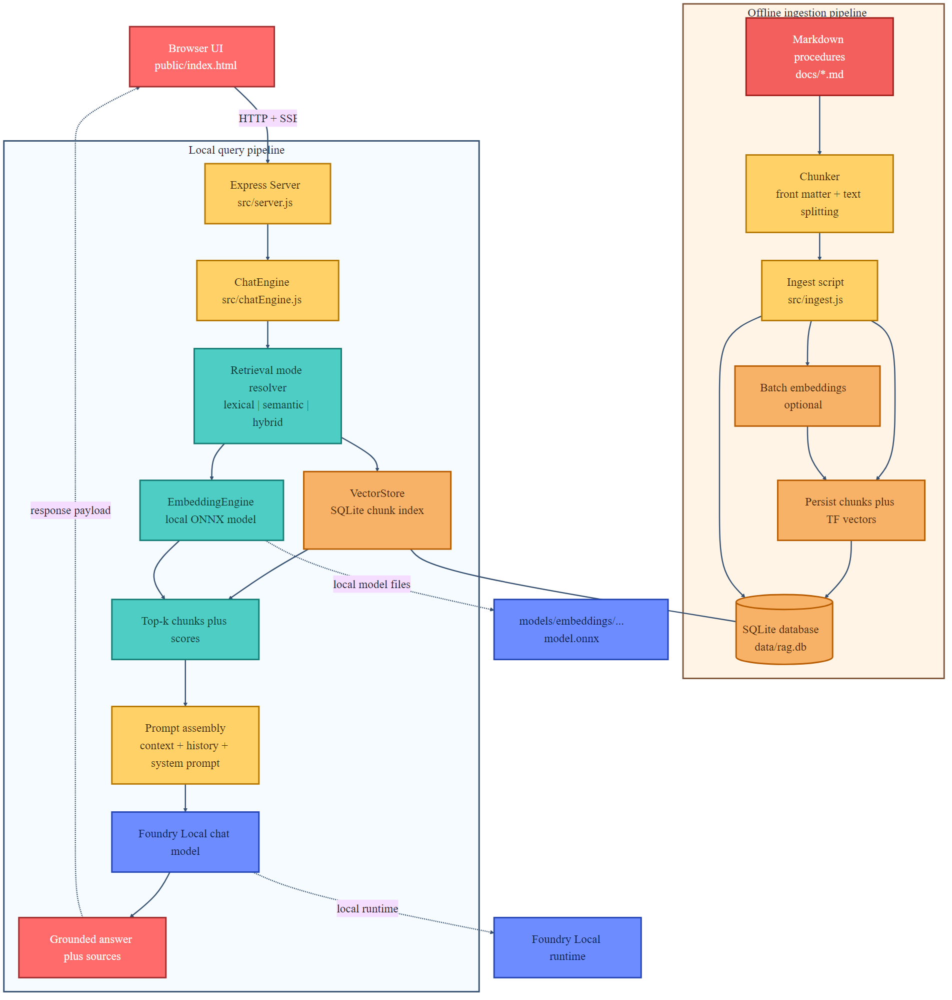
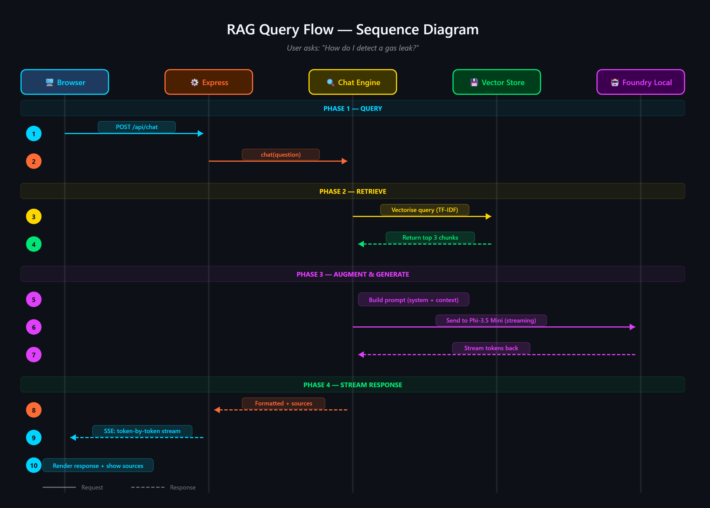
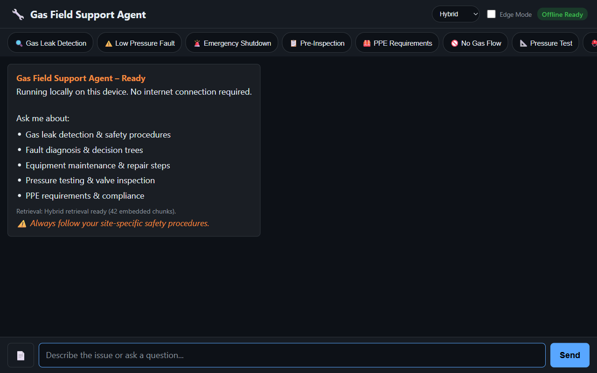
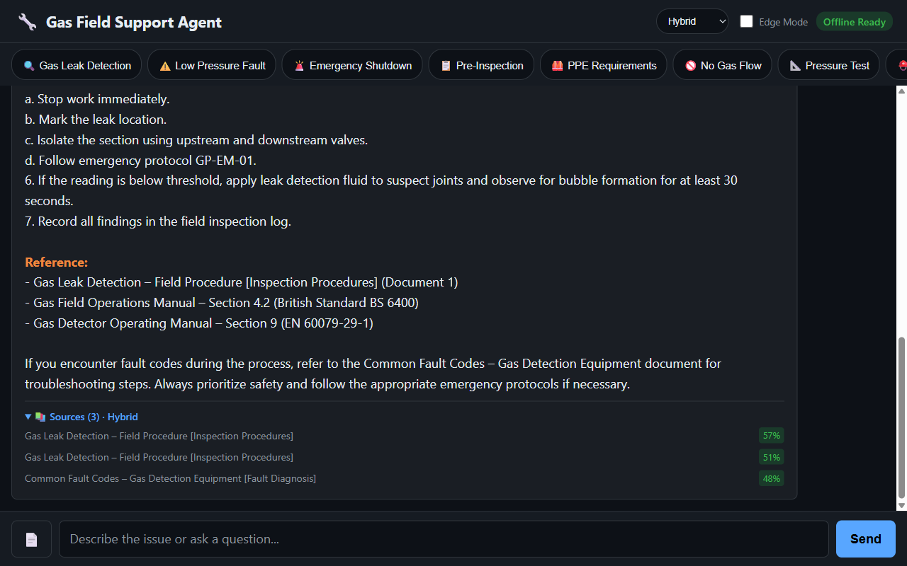

Why this sample matters
Many local RAG demos stop at keyword search plus prompt stuffing. This sample goes further. It keeps lexical retrieval for exact matches, adds local ONNX embeddings for semantic similarity, stores both representations in SQLite, and uses Foundry Local for the generation step. The result is a local assistant that can answer paraphrased questions more reliably without giving up deterministic fallback behaviour.
Exact terms, product names, alarm codes, and structured procedures still rank well even if semantic retrieval is unavailable.
The embedding pipeline uses a local ONNX model through Transformers.js, so the retrieval stack stays on device.
The chat model is resolved through Foundry Local, including hardware aware model selection and local download management.
What the implementation actually does
Offline ingestion pipeline
Markdown files in docs/ are parsed, chunked, and written into a local SQLite database. Each chunk stores a sparse term frequency map, and if the embedding model is available, a dense embedding vector as well.
- Read Markdown procedures and extract front matter metadata.
- Split the body into small overlapping chunks sized for local context budgets.
- Generate ONNX embeddings when the model is available.
- Persist lexical and semantic data together in SQLite for fast local retrieval.
Runtime query pipeline
The browser posts a question to the Express server. The chat engine resolves the requested retrieval mode, fetches the top chunks, builds the final prompt, and sends the grounded prompt to the local Foundry model.
- Accept a question and an optional retrieval mode from the UI.
- Resolve whether the request should run in lexical, semantic, or hybrid mode.
- Retrieve the most relevant chunks from SQLite, using dense similarity where available.
- Inject context and history into the prompt, then generate the final answer locally.


Getting started with the sample
The repository already contains the application code and sample documents. You still need Node.js 20 or newer, Foundry Local, and an ONNX embedding model on disk. The default embedding path is models/embeddings/bge-small-en-v1.5.
cd c:\Users\leestott\local-hybrid-retrival-onnx
npm install
huggingface-cli download BAAI/bge-small-en-v1.5 --local-dir models/embeddings/bge-small-en-v1.5
npm run ingest
npm startEach chunk is written to data/rag.db with metadata, sparse lexical data, and an optional dense vector.
The client allows you to switch between lexical, semantic, and hybrid retrieval modes, view sources, and upload extra documents.
Code walkthrough
The sample is compact enough to read in one sitting. The important design choice is that retrieval is modular. The lexical path remains first class, and the semantic path layers on top instead of replacing it.
1. Central configuration keeps the retrieval system simple
The retrieval mode defaults to hybrid, but the system also declares a lexical fallback and explicit score weights. Those defaults matter because they shape the user experience when the local embedding stack is unavailable.
export const config = {
model: "phi-3.5-mini",
docsDir: path.join(ROOT, "docs"),
dbPath: path.join(ROOT, "data", "rag.db"),
chunkSize: 200,
chunkOverlap: 25,
topK: 3,
retrievalMode: process.env.RETRIEVAL_MODE || "hybrid",
retrievalModes: ["lexical", "semantic", "hybrid"],
fallbackRetrievalMode: "lexical",
retrievalWeights: {
lexical: 0.45,
semantic: 0.55,
},
embeddingModelPath: resolveFromRoot(
process.env.EMBEDDING_MODEL_PATH || path.join("models", "embeddings", "bge-small-en-v1.5")
),
};2. Embeddings stay local through Transformers.js and ONNX Runtime
The embedding engine explicitly disables remote model access. That is a small but important detail for air gapped or privacy sensitive deployments.
env.allowLocalModels = true;
env.allowRemoteModels = false;
this.extractor = await pipeline("feature-extraction", resolvedPath, {
local_files_only: true,
});
const output = await this.extractor(text, {
pooling: "mean",
normalize: true,
});3. SQLite stores sparse and dense signals together
The vector store is not a separate vector database. Instead, it persists the term frequency map and the dense embedding in the same chunk table. That keeps the system lightweight and easy to inspect.
searchHybrid(query, queryEmbedding, topK = 5, weights = { lexical: 0.45, semantic: 0.55 }) {
const lexicalResults = this.searchLexical(query, topK * 3);
const semanticResults = this.searchSemantic(queryEmbedding, topK * 3);
if (semanticResults.length === 0) {
return lexicalResults.slice(0, topK).map((row) => ({
...row,
retrievalMode: "lexical",
}));
}
const fused = [...combined.values()].map((row) => ({
...row,
score: (row.lexicalScore * lexicalWeight) + (row.semanticScore * semanticWeight),
retrievalMode: row.lexicalScore > 0 && row.semanticScore > 0 ? "hybrid" : (row.semanticScore > 0 ? "semantic" : "lexical"),
}));
fused.sort((a, b) => b.score - a.score);
return fused.slice(0, topK);
}This design gives you a useful operational property. If semantic retrieval produces nothing, the system still returns ranked lexical results. You do not get an empty prompt just because the embedding branch is unavailable.
4. ChatEngine resolves retrieval mode before prompt assembly
The runtime logic is straightforward. Resolve the requested retrieval mode, build a query embedding when needed, and fall back to lexical search if semantic retrieval cannot execute.
resolveRetrievalMode(requestedMode) {
const desiredMode = config.retrievalModes.includes(requestedMode)
? requestedMode
: config.retrievalMode;
if ((desiredMode === "semantic" || desiredMode === "hybrid") && !this.semanticAvailable) {
return config.fallbackRetrievalMode;
}
return desiredMode;
}
async retrieve(query, requestedMode) {
const topK = this.compactMode ? Math.min(config.topK, 3) : config.topK;
const mode = this.resolveRetrievalMode(requestedMode);
if (mode === "lexical") {
return { chunks: this.store.searchLexical(query, topK), retrievalMode: "lexical" };
}
}5. Foundry Local manages model discovery and loading
The generation layer uses FoundryLocalManager to discover and load a local chat model. The code asks the catalogue for the configured model alias, downloads it if needed, then creates a chat client with conservative generation settings.
const manager = FoundryLocalManager.create({ appName: "gas-field-local-rag" });
const catalog = manager.catalog;
this.model = await catalog.getModel(config.model);
this.modelAlias = this.model.alias;
if (!this.model.isCached) {
await this.model.download((progress) => {
const pct = Math.round(progress * 100);
this._emitStatus("download", `Downloading ${this.modelAlias}... ${pct}%`, progress);
});
}
await this.model.load();
this.chatClient = this.model.createChatClient();
this.chatClient.settings.temperature = 0.1;This is a useful pattern for local app UX. The server starts, exposes a status endpoint, and streams initialisation progress to the front end rather than blocking the entire interface.
What users see in practice
The UI is intentionally simple. It exposes retrieval mode, edge mode, chat, and sources, which is enough to make retrieval behaviour visible during testing.


Best practices for ONNX RAG on local machines
A local semantic stack can fail because of missing model files, incompatible runtimes, or packaging issues. Lexical search protects the user experience.
Storing TF data and embeddings together simplifies inspection, debugging, and fallback behaviour. It also keeps ingestion and retrieval logic coherent.
The sample uses chunk size 200, overlap 25, and top K 3 to stay aligned with local context budgets and low latency execution.
The sample exposes /api/health and /api/status. This is essential when users need visibility into model downloads, cached assets, and embedding availability.
ONNX Runtime compatibility matters. If you see API version mismatch errors, align the native runtime versions used by Foundry Local and the embedding stack before troubleshooting prompt quality.
The hardest bugs usually appear before generation. Validate lexical ranking, semantic ranking, hybrid fusion, and fallback mode with unit tests and representative queries.
Hybrid ONNX RAG versus classic RAG versus CAG
The most useful comparison is not about which acronym is newer. It is about where context is assembled, how retrieval behaves under failure, and how much operational discipline each approach requires.
| Dimension | Classic local RAG | This hybrid ONNX RAG sample | CAG |
|---|---|---|---|
| How context is assembled | Retrieve chunks at query time, usually with lexical ranking, then inject them into the prompt. | Retrieve chunks at query time with lexical, semantic, or fused hybrid scoring, then inject the top chunks into the prompt. | Prepare or cache context ahead of the request and feed the model a curated pack rather than performing fresh retrieval for each query. |
| Main benefit | Simple to build, easy to reason about, and usually the fastest way to prove local grounding. | Better recall for paraphrases while still preserving exact match retrieval and graceful fallback. | Very predictable prompts and low runtime overhead once the context pack is prepared. |
| Main weakness | Lexical retrieval misses synonyms, reformulations, and fuzzy natural language queries. | More moving parts, larger local footprint, and native runtime compatibility to manage. | Coverage depends heavily on curation. If the prepared context is stale or too narrow, the assistant cannot discover new evidence at runtime. |
| Failure behaviour | Missed retrieval leads directly to weak grounding. | Semantic failure degrades to lexical mode if the system is designed properly, which this sample does. | Prepared context can become obsolete or omit the exact case the user needs. |
| Operational profile | Lower complexity but weaker recall unless you add better ranking or re ranking later. | Moderate complexity with ONNX models, embedding persistence, and score fusion, but a stronger retrieval profile. | Low query time complexity, higher editorial and maintenance discipline. |
| Best fit | First local search assistants, internal documentation bots, and small proof of concept systems. | Production minded local copilots that need offline operation and stronger recall across varied phrasing. | Tightly bounded workflows, guided procedures, and environments where prompt stability matters more than open ended discovery. |
You need the shortest path to a local grounded assistant and your users mostly type exact domain terms.
You need better recall for messy language, synonyms, and varied phrasing, but still want offline execution and explicit fallback.
You can curate a stable context pack ahead of time and prioritise prompt consistency over broad runtime search.
What I would pay attention to before shipping
Retrieval quality
- Measure how often hybrid retrieval returns better source coverage than lexical only search.
- Check whether the top chunks are actually complementary or just near duplicates with different scores.
- Evaluate exact code and acronym queries separately from natural language queries.
Runtime reliability
- Verify that the embedding model directory is packaged correctly on every target machine.
- Pin native dependencies and confirm ONNX Runtime compatibility in CI and on the deployment image.
- Make sure the app still gives usable answers when semantic retrieval is disabled.
Final take
If you are getting started with ONNX RAG and Foundry Local, this repository is a strong reference implementation because it does not pretend local AI systems are frictionless. It shows the real engineering trade off: you get better retrieval quality by combining lexical and semantic search, but you must also design for fallback, observability, and runtime alignment.
Compared with a basic local RAG system, this hybrid approach gives you broader recall and more resilient behaviour. Compared with CAG, it gives you much more flexibility for changing document sets and open ended questions. If your goal is a practical local assistant that still feels grounded and inspectable, hybrid ONNX RAG is the most balanced place to start.